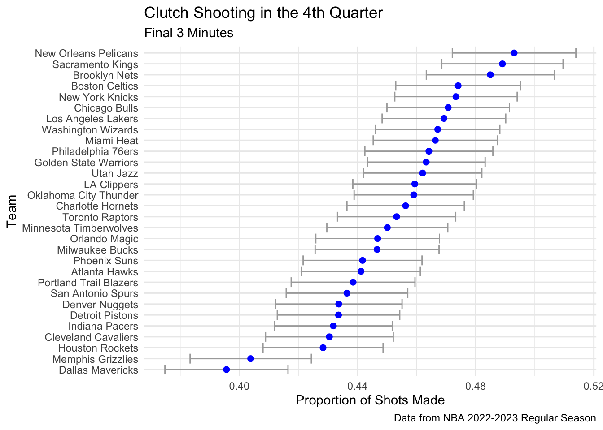

library(tidyverse)
library(dplyr)
library(ggplot2)
theme_set(theme_minimal())
library(here)
library(plotly)
nba_22_23 <- read_csv(here("data/NBA_2023_Shots.csv"))
Introduction
I am working with some NBA data containing every shot during the 2022-2023 NBA regular season. There are 217,220 observations in this data set, meaning that there were 217,220 shots taken by players in the NBA in this season.
I am most interested in the variables:
TEAM_NAME: The name of the team that took the shotZONE_NAME: The location on the court where the shot was takenSHOT_TYPE: The type of shot taken (2PT or 3PT)SHOT_MADE: Whether the shot was made (TRUE) or missed (FALSE)QUARTER: The quarter in which the shot was takenMINS_LEFT: The number of minutes left in the quarter when the shot was taken
Data found at DomSamangy’s GitHub (https://github.com/DomSamangy/NBA_Shots_04_23)
I am going to use this data to create some visualizations to answer the following questions:
- How were teams 3-pt shooting percentages this season from different areas?
- How clutch were NBA teams this season? Let’s look at shooting percentages across teams in the final 3 minutes of the fourth quarter.
Visualizations
Load in data:
Look at the data:
head(nba_22_23)# A tibble: 6 × 26
SEASON_1 SEASON_2 TEAM_ID TEAM_NAME PLAYER_ID PLAYER_NAME POSITION_GROUP
<dbl> <chr> <dbl> <chr> <dbl> <chr> <chr>
1 2023 2022-23 1610612764 Washington … 203078 Bradley Be… G
2 2023 2022-23 1610612764 Washington … 204001 Kristaps P… C
3 2023 2022-23 1610612764 Washington … 1628420 Monte Morr… G
4 2023 2022-23 1610612764 Washington … 204001 Kristaps P… C
5 2023 2022-23 1610612764 Washington … 1630166 Deni Avdija F
6 2023 2022-23 1610612764 Washington … 204001 Kristaps P… C
# ℹ 19 more variables: POSITION <chr>, GAME_DATE <chr>, GAME_ID <dbl>,
# HOME_TEAM <chr>, AWAY_TEAM <chr>, EVENT_TYPE <chr>, SHOT_MADE <lgl>,
# ACTION_TYPE <chr>, SHOT_TYPE <chr>, BASIC_ZONE <chr>, ZONE_NAME <chr>,
# ZONE_ABB <chr>, ZONE_RANGE <chr>, LOC_X <dbl>, LOC_Y <dbl>,
# SHOT_DISTANCE <dbl>, QUARTER <dbl>, MINS_LEFT <dbl>, SECS_LEFT <dbl>Let’s look at the top 4 teams from each conference at the end of the 2022-2023 season and visualize their 3-pt shooting percentages from different areas on the court. The top 4 teams from each conference are as follows:
- Milwaukee Bucks (East, 1st, 58-24)
- Boston Celtics (East, 2nd, 57-25)
- Philadelphia 76ers (East, 3rd, 54-28)
- Cleveland Cavaliers (East, 4th, 51-31)
- Denver Nuggets (West, 1st, 53-29)
- Memphis Grizzlies (West, 2nd, 51-31)
- Sacramento Kings (West, 3rd, 48-34)
- Phoenix Suns (West, 4th, 45-37)
nba_3pt_shots <- nba_22_23 |>
filter(SHOT_TYPE == "3PT Field Goal") |>
group_by(TEAM_NAME, ZONE_NAME) |>
summarise(shot_perc = mean(SHOT_MADE),
total_shots = n(),
.groups = "drop_last") |>
filter(TEAM_NAME == "Boston Celtics" |
TEAM_NAME == "Milwaukee Bucks" |
TEAM_NAME == "Philadelphia 76ers" |
TEAM_NAME == "Cleveland Cavaliers" |
TEAM_NAME == "Denver Nuggets" |
TEAM_NAME == "Memphis Grizzlies" |
TEAM_NAME == "Sacramento Kings" |
TEAM_NAME == "Phoenix Suns")
plot <- ggplot(data = nba_3pt_shots, aes(x = TEAM_NAME, y = shot_perc,
label = total_shots,
label2 = shot_perc)) +
geom_col(position = "dodge", aes(fill = ZONE_NAME)) +
coord_flip() +
scale_fill_viridis_d() +
labs(title = "3-Point Shooting Percentages by Location",
subtitle = "Top 4 Conference Teams from 2022-2023 Season",
x = "Zone",
y = "Proportion of Shots Made",
fill = "Court Position",
caption = "Data from NBA 2022-2023 Season") +
theme_minimal()
ggplotly(plot, tooltip = c("label", "label2"))Back Court 3-pt % is not very important to all basketball teams as it is not a common shot. The most important 3-pt % is the corner 3-pt %, as it is the shortest 3-pt shot. This can be seen in the visualisation above, as the corner 3-pt % is higher for most teams, whether it be the Left Side or the Right Side.
Let’s look at shooting percentages across teams in the final 3 minutes of the fourth quarter.
clutch_shots <- nba_22_23 |>
filter(QUARTER == 4,
MINS_LEFT <= 3) |>
group_by(TEAM_NAME, SHOT_MADE) |>
summarise(n_shots = n(), .groups = "drop_last") |>
ungroup() |>
pivot_wider(names_from = SHOT_MADE, values_from = n_shots) |>
rename(n_made = `TRUE`, n_missed = `FALSE`) |>
mutate(n = n_made + n_missed) |>
mutate(phat = n_made / n) |>
mutate(se = sqrt(phat * (1 - phat) / n),
se_lb = phat - se,
se_ub = phat + se) |>
mutate(TEAM_NAME = fct_reorder(TEAM_NAME, phat))
ggplot(data = clutch_shots, aes(x = TEAM_NAME)) +
geom_errorbar(aes(ymin = se_lb, ymax = se_ub), col = "darkgray") +
geom_point(aes(y = phat), col = "blue", size = 2) +
coord_flip() +
labs(title = "Clutch Shooting in the 4th Quarter",
subtitle = "Final 3 Minutes",
x = "Team",
y = "Proportion of Shots Made",
caption = "Data from NBA 2022-2023 Regular Season") +
theme_minimal()
The visualization above shows the proportion of shots made by each team in the final 3 minutes of the fourth quarter. The error bars represent the 95% confidence intervals for the proportion of shots made. The confidence intervals are quite wide for most teams, which is expected given the small sample sizes for each team in this situation.
Conclusion and Wrap-Up
In conclusion, the visualizations above show that the corner 3-pt % is the most important 3-pt % for most teams, and that the confidence intervals for the proportion of shots made in the final 3 minutes of the fourth quarter are quite wide for most teams. If I had more time to work on this, I would look into creating heat maps for each team based on location of shots taken and whether they were made or missed. This would give a better understanding of where each team is most successful on the court. In DomSamangy’s GitHub, he has a function that creates a map background and this would be a great thing to apply to visualizations.
Connections to Class Ideas
In regards to my class Data Visualization, these visualizations are effective ways of communicating information. I chose not to use all NBA teams when looking at 3-pt % by location to avoid the visualization being too cluttered, and allowing the focus to be on the location of the shots. I chose to put the teams on the y-axis and order by the proportion of shots made in the final 3 minutes of the fourth quarter when looking at the “clutchness” of teams. This allows the focus to be on the proportion of shots made, and the error bars show the uncertainty in the proportion of shots made. I also chose to use a blue color for the points and a dark gray color for the error bars to make the visualization easier to read. I also chose to use a minimal theme to make the visualization easier to read. I think these visualizations are effective ways of communicating information.